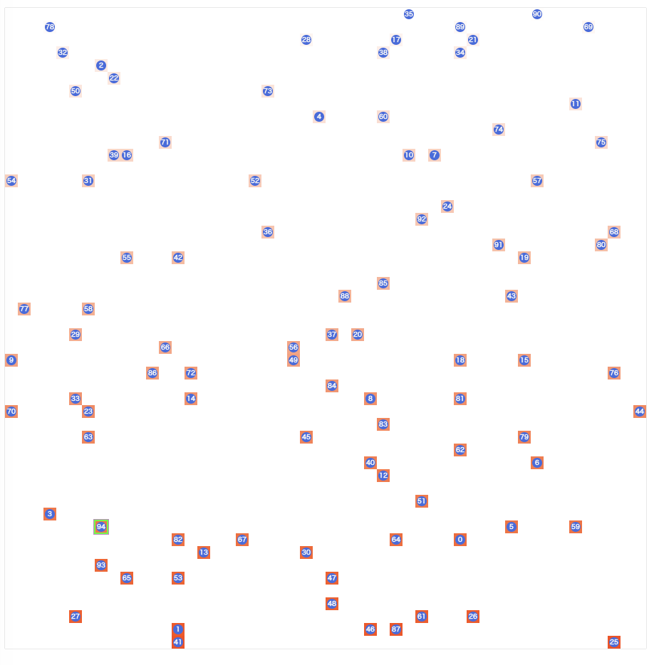

RECRUIT 日本橋ハーフマラソン 2023夏 (AtCoder Heuristic Contest 022)¶

問題概要¶
- https://atcoder.jp/contests/ahc022
- L*Lのグリッド(トーラス)で表されるAnother SpaceにN個の出口があり、1対1に対応するワームホールと繋がっている
- Another Space側の各セルに空調設備を1つずつおき、温度調整ができる
- 温度設定コストは周囲のセルとの温度差から決まる
- 1回の計測では、ワームホールを1つ選び、出口を通って予め決めておいた移動を行った先のセルの温度を計測できる
- 計測コストは、移動距離に応じて決まる
- 計測機器の都合のため、計測した温度には誤差が含まれる
- 設備の配置、計測、回答、の順で行うとき、できるだけコストが少なく、かつ、正しく対応関係を見つけよ
時間¶
- 223 時間
個人的メモ¶
- 配置をどうするか、計測をどうするか、推定をどうするか、それぞれアプローチの自由度が高く、よい戦略を見つけるのが難しい問題
- どれがよいアプローチかは試してみないとわかりにくいため、いろいろ試すのが重要だった
- ざっくり、きちんと対応関係を確率で表現し、可能性が高い順に計測する、という方法が強かった模様
問題固有の性質¶
- 評価指標が複数ある(配置コスト、計測コスト、正解率)
- 何がどう影響するかがわかりにくいので、やって見るほかなかった
- ワームホールと出口は1対1に対応する(1つしか対応しない、順列、という情報が使える)
- 0〜100よりも450〜550で盤面を作ったほうが0で打ち切られないため得られる情報が多い
- 0から増やす方で考えるより、500を基準に減らす方/増やす方で調整したほうがよかったかも
主なアプローチ¶
- いろんなアプローチがあり得たが、一部でいうと以下
bit埋め込み¶
- Nは100個なので、7ビットで表現できる
- Lが広く、Nが少なければ、周囲のマスをビット表現にしてそこから復元することができる
- 計測コストが少なく済ませられる
- しかし、この方法では、密度が高い場合(Lが小さい場合)では難しかったり、配置コストが大きくなってしまう問題がある
1点高い位置を作る¶
- ある1マスを1000で、他を0としたりすると、各出口からそのマスを計測しようとして、計測できれば出口を特定できる
- 配置コストを比較的少なくできる
- しかし、Sが大きくなると計測が難しくなってくる
ワームホールiと出口jが一致する確率を計算¶
- 今回上位の人の多くが取っていたアプローチで、ワームホールiと出口jの対応関係を確率で表し、計測情報が得られるたびにベイズの公式や確率計算をし直して、一番可能性の高いところを探す
推定パート¶
- 得られた計測情報をワームホールiと出口jの関係性を明らかにするのに使いたい
- 上位では、これを確率で表現して扱っていた
- また、入口と出口が1対1対応するという情報を計算途中でも考慮できるのが強かった模様
- 「ワームホールiはどの出口jに対応してそうか？」だけでなく、「出口jの確率が高ければ他のワームホールiには対応しなそう」という情報
- 最後に加味するだけでは不十分で、計測中で考慮できると計測回数が減らせた
入口iが出口jに対応する確率¶
- 観測データDが与えられて、入口iと出口jが対応する確率P(i=j|D)を考えると、ベイズの式から、P(i=j|D)=P(D|i=j)*P(i=j)/P(D)
- どれが対応するかの事前知識はないので、P(i=j)は一様で、i,jについてすべて同じ
- P(D|i=j)は尤度・同時確率分布で、正規分布の確率密度関数に観測値を入れたもの(の積)を使う
- 0〜1000にclippingされるので、尤度(確率)計算ではそこも考慮する
- P(i=j)である確率は、P(i=j) = P(i=j|D) / ΣP(i=j'|D)で求められる
- 行列で表現すると、各行について求めている感じになるが、今回の場合、1対1対応するという情報から、あるi=jの確率が高い場合に「他のiがjに対応しない」という情報も加味できる(列方向)
- ただし、厳密にiとjの対応関係を順列を考慮して確率計算しようとすると大変
- これは二重確率行列というもので、Sinkhornアルゴリズムという反復解法で近似解を求めることができる
- p/(1-p)を取るとよい話も
二重確率行列、置換行列¶
- 入り口と出口の対応関係の確率を行列で考えると、1対1対応するので、二重確率行列というものになる
- 各行の和が1であるような行列を確率行列
- 各行、および、各列の和が1であるような行列を二重確率行列
- 各行、および、各列のなかで1が1つだけありそれ以外は0であるような行列を置換行列
- Sinkhornアルゴリズム、Sinkhorn-Knoppアルゴリズム
- 各行、各列を交互に正規化を繰り返すと二重確率行列に近似できる
- https://twitter.com/risujiroh/status/1693229970154569950
- https://en.m.wikipedia.org/wiki/Sinkhorn%27s_theorem
- 行列スケーリング、最適輸送
割当問題¶
- 得られた計測データから、対数尤度を値として割当問題として解くアプローチもある
- 最後に1対1対応になるように適用することが考えられるが、差分更新をしていくこともできる模様
- ハンガリアン法、最小費用流
- 対数尤度などで全部の和が最小になるように割当を決める
- 2番目に良い解との差を見て判断
- ハンガリアン法、最小費用流
ベクトルの距離の差¶
- 自分は、各iについて、予め決めておいた相対位置で取得できる値を要素に持つベクトルを考えて、期待値ベクトルとの差を考える方法でとりあえずやっていたのを最後までそのままにしていた、、、
- 未観測部分は期待値と一緒として扱う
- 差が小さいものから探す
- しかしこの場合、確率が高いやつよりも情報が少ないやつが選ばれやすかったかも、、、
計測パート¶
- 計測コストでいうと距離が小さい方がよいが、どちらかというと計測回数を少なくするのが大事だったかも
- 計測地点
- 基本は、ある2つについて計測したときに識別することができるよう値の差が大きくなる地点、かつ、できるだけ近いところ、を探したい
- または、予め用意した「計測地点」を計測するようにする
- ある1地点を何度も狙って計測する場合は、全部の出口からできるだけ近いところにその1地点を持ってくる方が良い
- ただ、距離の総和の最小値ではなく、近いところから決まっていくような場合は回数的な重み付けをしたほうが良い模様
- https://twitter.com/Jiro_tech15/status/1693203779582386276
- 計測順番
- 距離がコストなので、距離が小さい計測から行ったほうが、最後の方で距離が長い計測する回数を減らせる
- 一番怪しい/情報不足なやつから探すよりも、可能性が高い方から探したほうがよいっぽい
- おそらく、可能性が高いの出口よりも情報がほぼない出口を先に計測する可能性があったりで計測回数が増えてしまうかも
measure(i, pos)のどちらを動かすか¶
- 計測では、iを動かすか、posを動かすかが考えられる
- pos側を動かす場合は、外した場合の情報はiでしか使えない
- posを固定してiを動かす場合は、期待と違った場所を計測した場合でも、そのiの位置を特定する情報に役に立つ可能性がある
確率最大のものを計測¶
- ワームホールiと出口jの対応関係を確率で表している場合は、その確率が一番高いところを計測しにいく
- 一定以上の確率値になったら対応するとみなして計測しない
エントロピー最大/KL-divergence最小¶
- エントロピー -ΣP(i) * log(P(i))で最大のものを選ぶ
- https://twitter.com/ethylene_66/status/1693204443892945142
- (計測コストで割ったものを使う、など)
二乗誤差¶
ジニ係数¶
配置パート¶
- 一番自由度があり、配置によって計測や推定の方法が代わりうるので、重要そうだが、計測や推定方法が優れいている場合はそんな奇をてらったものは不要だったみたい
配置パターン¶
- 一点高い地点を作る
- 山の形、山＋山頂部分だけ点or谷、複数の山
- 一点高い地点よりも配置コストが減る＋外したときの情報も使えるので計測回数を減らせる可能性がある
- ユークリッド距離で計算
- ポアソン方程式で計算
- 小さい四角、四角＋段差
- 領域を4x2にして、端の領域を高くする/低くする
- 各出口がすべて異なるように設定(S=小用)
- 切れ込み
- 出口に異なる温度を割り当てる、周囲数マスを見るだけで判断できるようにする(出口付近を符号化)
- 設定温度を山登り/焼きなまし
- 横の山と縦の山
- 領域を4つに分割して、それぞれで配置
- xy軸で区別
- 位置エンコーディング的な感じ
- ガウシアンぼかし的な感じでスムージング
山の形での配置コスト最小の配置¶
- 山の形になるように配置する場合、山頂を固定して配置コストが最小になるようにしたい場合、外に向かって均等に値を減らすのは実は配置コスト最小ではない
- 配置コストの形的には、最適な値はポアソン方程式(＋ディリクレ境界条件)の解から求められるらしい
- (自分の怪しい解釈では、弾性ポテンシャルで中央差分近似を考えると配置コストと同じ形になって、ポテンシャル最小になるようポアソン方程式を差分方程式で解く感じ(？))
- (ただ、今回は計測コストや失敗率とかも関係すると思うので、配置コスト最適が一番よいかはよくわからない)
- 簡単に実装する方法は、ある地点についてその4近傍の値の平均値にするのを繰り返す感じ(ヤコビとか、ガウスザイデルとか)
- https://twitter.com/Jiro_tech15/status/1693241395711218042
- https://twitter.com/shr_pc/status/1693213597000982654
- https://twitter.com/shr_pc/status/1693234423398089180
- https://hooktail.sub.jp/vectoranalysis/Laplacian/
- 他の方法でも
- https://twitter.com/terry_u16/status/1694722396207608279
- https://qiita.com/jkdorayaki/items/3f7d581b70c7881c7a5f
その他¶
同じ地点を繰り返し計測した場合¶
- ノイズが正規分布に従うので、1回での計測値の分散は
S^2 - 正規分布の再生性から、正規分布の線形結合は正規分布の形になり、同じ地点をk回計測した場合の分散は
k*S^2で、平均化のためにkで割ると、k/k^2*S^2=S^2/kで標準偏差的には1/sqrt(k)倍になる- kを増やしてもある程度のkからは減少幅が小さくなり、Sが大きい場合は必要なkが大きくなってしまう
- 反復符号的には、温度が0か1000かを区別するのに500をラインにするとそれを超えてしまう確率はS=900でも30%ぐらいだと思うので、繰り返して多数決とかすれば誤り率は減る、と見ることもできる
配置コストと測定コストのバランス¶
- 同程度になったほうがよいかというと、アプローチ次第で、そうでもなかった模様
標準正規分布のロジスティック近似¶
- https://twitter.com/terry_u16/status/1694703649103233145
- https://qiita.com/KiyoshiSakurai1984/items/cb8ec1fe09ff690e26b2
実装周りの工夫¶
- アプローチを切り替えやすいように実装する
- 関数・クラス(〜Solver)に分ける、Strategyパターン、など
- 最初から高速化しすぎない
- 1秒とかで回して、評価時間を短くする方を優先
- 評価結果の情報量を増やす
- 各Sごとの分布や各コスト、正解率を出力
- グラフ化
costtt¶
- https://twitter.com/bowwowforeach/status/1693208488921719105
- 今回、コストの数字の桁が多いので、カンマ表示や、表示するときに揃えると見やすい
お絵かき¶
解説¶
(50位まで&発言を見つけられた方のみ)
- Jirotechさん
- https://twitter.com/Jiro_tech15/status/1693203060821225548
- https://twitter.com/Jiro_tech15/status/1693211775385358568
- https://twitter.com/Jiro_tech15/status/1693214624085385660
- https://twitter.com/Jiro_tech15/status/1693216109854617781
- https://twitter.com/Jiro_tech15/status/1693220905600905539
- https://twitter.com/Jiro_tech15/status/1693247315799421131
- https://twitter.com/Jiro_tech15/status/1693244165256270040
- https://twitter.com/Jiro_tech15/status/1693242890540188069
- https://twitter.com/Jiro_tech15/status/1693235186845253942
- https://atcoder.jp/contests/ahc022/submissions/44782631
- saharanさん
- https://twitter.com/shr_pc/status/1693209345616703665
- https://twitter.com/shr_pc/status/1693210438392328628
- https://twitter.com/shr_pc/status/1693213000231240169
- https://twitter.com/shr_pc/status/1693213597000982654
- https://twitter.com/shr_pc/status/1693215369144525032
- https://twitter.com/shr_pc/status/1693216856348475860
- https://twitter.com/shr_pc/status/1693229562690408872
- https://twitter.com/shr_pc/status/1693234423398089180
- https://twitter.com/shr_pc/status/1693242565129339174
- https://twitter.com/shr_pc/status/1693246479304159373
- https://twitter.com/shr_pc/status/1693257084304040044
- https://twitter.com/shr_pc/status/1693261088274727173
- Shun_PIさん
- https://twitter.com/Shun___PI/status/1693202924921647190
- https://twitter.com/Shun___PI/status/1693203829192589806
- https://twitter.com/Shun___PI/status/1693205416233374081
- https://twitter.com/Shun___PI/status/1693209362364551623
- https://twitter.com/Shun___PI/status/1693219125064274302
- https://twitter.com/Shun___PI/status/1693219646630199350
- https://twitter.com/Shun___PI/status/1693223260719391015
- https://twitter.com/Shun___PI/status/1693225859690401906
- https://twitter.com/Shun___PI/status/1693747344813195373
- toameさん
- monnuさん
- cuthbertさん
- https://twitter.com/ethylene_66/status/1693202932714684454
- https://twitter.com/ethylene_66/status/1693203255906775452
- https://twitter.com/ethylene_66/status/1693204443892945142
- https://twitter.com/ethylene_66/status/1693205760921231606
- https://twitter.com/ethylene_66/status/1693206374954778883
- https://twitter.com/ethylene_66/status/1693234455731937745
- https://twitter.com/ethylene_66/status/1693234797387379069
- https://twitter.com/ethylene_66/status/1693234936009163228
- https://twitter.com/ethylene_66/status/1693249180448542931
- https://twitter.com/ethylene_66/status/1693270037120094705
- hitonanodeさん
- yunixさん
- yuusanlondonさん
- https://twitter.com/yuusanlondon/status/1693205321903157581
- https://twitter.com/yuusanlondon/status/1693204593851642082
- https://twitter.com/yuusanlondon/status/1693210855570104576
- https://twitter.com/yuusanlondon/status/1693202619383034126
- https://twitter.com/yuusanlondon/status/1693268474267631690
- https://twitter.com/yuusanlondon/status/1693276440739926359
- https://twitter.com/yuusanlondon/status/1693280047325454805
- https://twitter.com/yuusanlondon/status/1693395846488887669
- https://yuusanlondon.hatenablog.com/entry/2023/08/23/085128
- birdwatcherさん
- wanuiさん
- eivourさん
- KawattaTaidoさん
- bowwowforeachさん
- https://twitter.com/bowwowforeach/status/1693205017174610164
- https://twitter.com/bowwowforeach/status/1693238815425749358
- https://twitter.com/bowwowforeach/status/1693243325363749064
- https://twitter.com/bowwowforeach/status/1693378250901442854
- https://bowwowforeach.hatenablog.com/entry/2023/08/24/205427
- risujirohさん
- https://twitter.com/risujiroh/status/1693213829554139600
- https://twitter.com/risujiroh/status/1693218049053413412
- https://twitter.com/risujiroh/status/1693222063132274805
- https://twitter.com/risujiroh/status/1693225599471620552
- https://twitter.com/risujiroh/status/1693229970154569950
- https://twitter.com/risujiroh/status/1693240347193950323
- eijirouさん
- xyz600さん
- Rice_tawara459さん
- https://twitter.com/rice_tawara459/status/1693203268481270016
- https://twitter.com/rice_tawara459/status/1693221872362811581
- https://twitter.com/rice_tawara459/status/1693221873767870952
- https://twitter.com/rice_tawara459/status/1693221875143639279
- https://twitter.com/rice_tawara459/status/1693221876490010770
- https://twitter.com/rice_tawara459/status/1693221877836313087
- https://twitter.com/rice_tawara459/status/1693221879526670492
- https://twitter.com/rice_tawara459/status/1693221881246331134
- https://twitter.com/rice_tawara459/status/1693224111525519688
- https://twitter.com/rice_tawara459/status/1693233037524553815
- https://twitter.com/rice_tawara459/status/1693248765002670100
- platinumさん
- iwashi31さん
- https://twitter.com/iwashi31/status/1693204215571849378
- https://twitter.com/iwashi31/status/1693208841515942114
- https://twitter.com/iwashi31/status/1693201979605196869
- https://twitter.com/iwashi31/status/1693264400906654168
- https://twitter.com/iwashi31/status/1693206357825274365
- https://twitter.com/iwashi31/status/1693845023861916018
- https://twitter.com/iwashi31/status/1693932455060005052
- https://iwashi31.hatenablog.com/entry/2023/08/20/193137
- itigoさん
- https://twitter.com/itigo_purokonn/status/1693204477640425875
- https://twitter.com/itigo_purokonn/status/1693206300392673444
- https://twitter.com/itigo_purokonn/status/1693208525223465089
- https://twitter.com/itigo_purokonn/status/1694292714857300434
- https://twitter.com/itigo_purokonn/status/1694319098891759696
- hamamuさん
- https://twitter.com/hamamu_kyopro/status/1693201790668541980
- https://twitter.com/hamamu_kyopro/status/1693204935985484097
- https://twitter.com/hamamu_kyopro/status/1693229202634604792
- https://twitter.com/hamamu_kyopro/status/1693247232680808572
- https://twitter.com/hamamu_kyopro/status/1693253209421406259
- https://twitter.com/hamamu_kyopro/status/1693254240746262573
- https://twitter.com/hamamu_kyopro/status/1693936995096203335
- shibh308さん
- ymatsuxさん
- broadさん
- kami634さん
- sashさん
- PrussianBlueさん
- tashikaniさん
- simanさん
- NKTさん
- C7BMkOO7Qbmcwck7さん
- Risenさん
- Moegiさん
- notkamonohasiさん
- phsplsさん
- sh_mugさん
- G4NP0Nさん